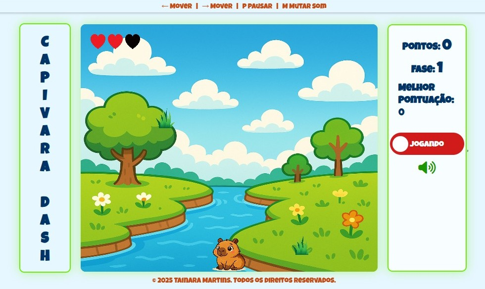
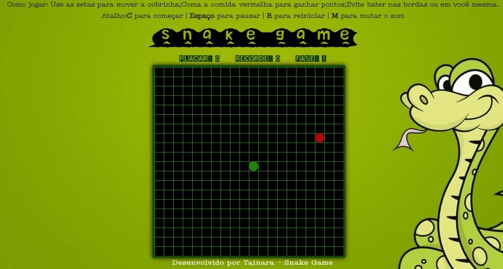
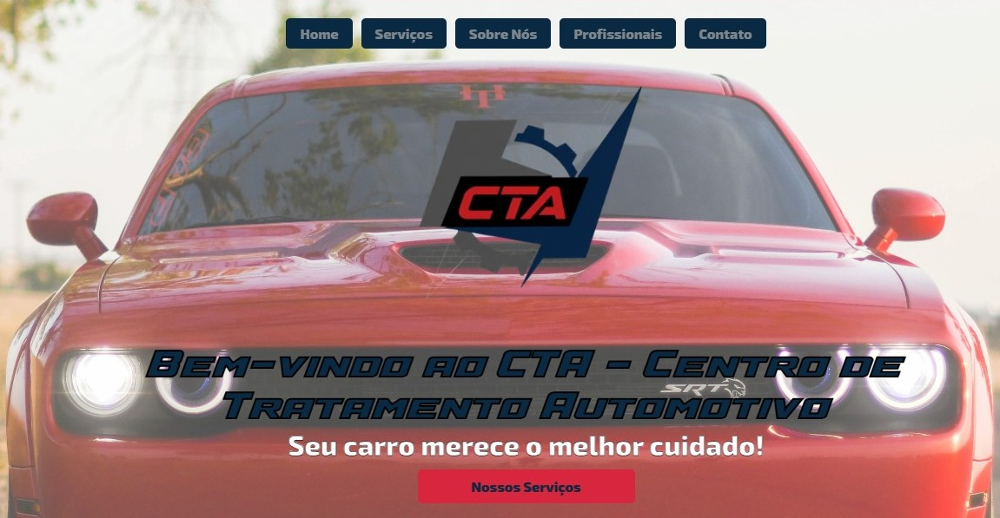

Minha trajetória na programação começou movida pela curiosidade e pela vontade de entender como as coisas funcionam por trás das telas. Aos poucos, fui descobrindo o universo do desenvolvimento e explorando linguagens e ferramentas diferentes.
Iniciei com exercícios simples em Portugol, que me ajudaram a compreender a lógica de programação e a estruturar meus primeiros algoritmos. Depois, passei a praticar com HTML e CSS, criando formulários, páginas interativas e pequenos projetos que me permitiram ver, na prática, como ideias se transformam em resultados visuais na web.
No decorrer do aprendizado, também me aproximei de conceitos mais técnicos, como o uso de banco de dados e os diferentes tipos de dados em SQL, além de explorar temas relacionados à manutenção de eletrônicos e ferramentas tecnológicas. Essas experiências ampliaram minha visão sobre a área de tecnologia, mostrando que programação não é apenas escrever código, mas também resolver problemas, criar soluções e transformar ideias em algo funcional.
O que me move até hoje é a vontade constante de aprender, experimentar e evoluir. Construir este portfólio é parte desse processo: um espaço para compartilhar minha jornada, meus projetos e a forma como a programação se tornou parte da minha história.
Tecnologias
HTML5
Nível Intermediário
CSS3
Nível Intermediário
JavaScript
Nível Básico
GitHub
Nível Intermediário
Figma
Nível Básico
Projetos
Capivara Dash
Capivara Dash é um jogo web simples e divertido, onde uma capivara corre superando obstáculos. O projeto une aprendizado em programação com criatividade, resultando em uma experiência leve e interativa.
Ver ProjetoSnake Game
Snake Game é um clássico jogo em que o jogador controla uma cobra que cresce ao coletar alimentos na tela. O desafio aumenta à medida que a cobra fica maior, exigindo atenção e estratégia para evitar colisões consigo mesma ou com as bordas do campo. É um projeto muito utilizado no aprendizado de programação por ser simples de implementar e, ao mesmo tempo, envolver conceitos importantes como lógica, controle de movimentos e detecção de colisões.
Ver ProjetoPortifólio

Portfólio desenvolvido como site pessoal para apresentar minha trajetória, projetos e aprendizados na área de programação. Ele reúne desde experimentos simples até aplicações mais criativas, servindo como um espaço para compartilhar evolução, habilidades e ideias transformadas em código. Além de mostrar os projetos, o portfólio também reflete meu estilo, minha forma de aprender e a paixão por tecnologia.
Ver ProjetoSite CTA
Site da CTA desenvolvido para reunir informações de forma clara e organizada, com foco em acessibilidade e navegação simples. O projeto foi pensado para apresentar conteúdos institucionais, serviços e contatos, funcionando como uma vitrine digital. Além do design limpo, a estrutura valoriza usabilidade e praticidade, destacando a importância de alinhar programação e comunicação em um mesmo espaço.
Ver Projeto
Se você deseja entrar em contato comigo, seja para discutir oportunidades de trabalho, colaborar em projetos ou simplesmente para dizer olá, sinta-se à vontade para me enviar uma mensagem. Estou sempre aberta a novas conexões e conversas interessantes!